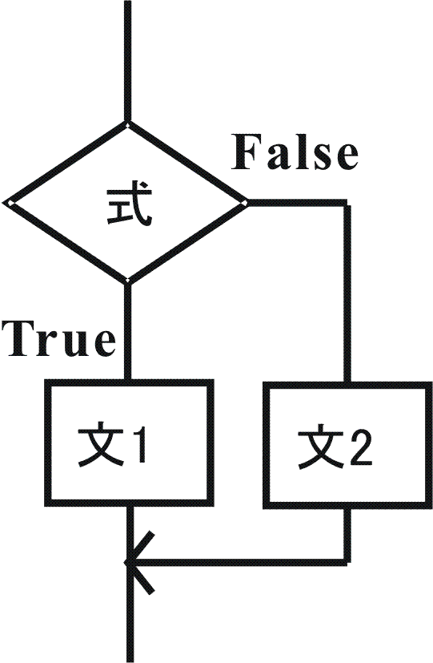
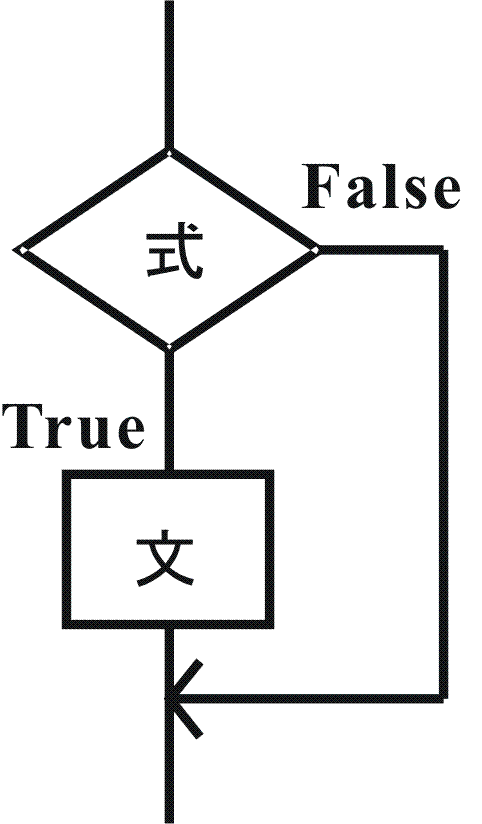
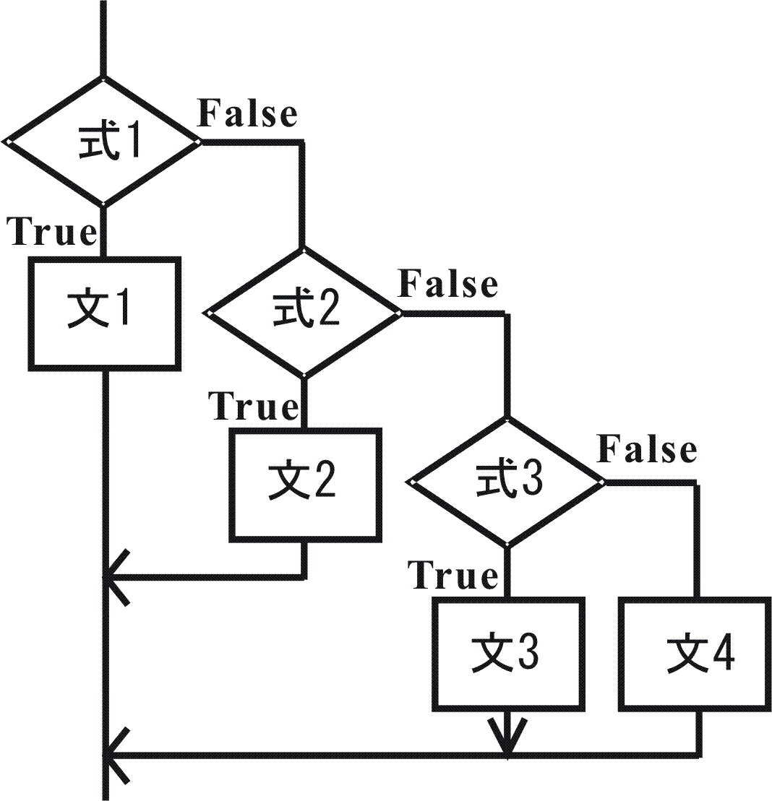
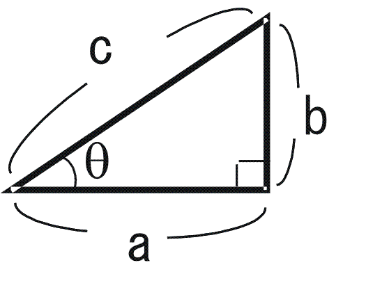

| プログラミングおよび演習 ＮＯ．４ |
| ｉｆ文 |
if文は
if(条件式){
複数の実行文1;
}else{
複数の実行文2;
}
の形をしています。この場合、条件式が成立する時に文１を実行し、不成立の時に文2を実行することになります。ここで、条件式は、以下のように約束します。
条件式 意 味 注 意 比較演算子 x==a xがaに等しい？ x=aと間違えない x!=a xがaに等しくない？ x>a xがaより大きい？ x<a xがaより小さい？ x>=a xがa以上？ x<=a xがa以下？ 論理演算子 (式1)&&(式2) (式1)と(式2)が同時に真？ (式1)||(式2) (式1)と(式2)のどちらかが真？ !(式1) (式1)が偽？

if文は上記のスタイル以外に、
if(条件式){
文1;
｝
のように、else文がない書き方もあります。反対に、
if(条件式１){
複数の実行文１;
}else if(条件式2){
複数の実行文2;
}else if(条件式3){
複数の実行文3;
}else {
複数の実行文4;
}
例４-１#include <stdio.h>
int main(void)
{
int x;
printf("\n正の整数値を入れてください\n");
fflush(0);
scanf("%d",&x);
printf("入力した値は%dです\n",x);
if(x < 0 ){
printf("負または大きすぎる値が入力されました。\n");
printf("もう一度やり直してください。\n");
}else if(x>100000000)
printf("入力した値は一億より大きい数です\n");
else if(x>1000000)
printf("入力した値は百万より大きく一億以下の数です\n");
else if(x>1000)
printf("入力した値は千より大きく百万以下の数です\n");
else
printf("入力した値は千以下の数です");
return(0);
} |
|
演習問題 ４－１ (Revised : 2015/05/19) 自分の身長と実測体重をキーボードから入力すると、標準体重、BMI(Body Mass Index)および肥満度を計算して、 入力された身長は m、 実測体重は kg。 上記の場合の標準体重は kg、 BMI指数は 、 肥満度は ％。 のように、計算結果を表示するプログラムを作りなさい。なお、それぞれの計算式は以下のとおり。 体重（ｋｇ） BMI＝ 身長（ｍ）×身長（ｍ） 標準体重（ｋｇ）＝身長（ｍ）×身長（ｍ）×２２ （実測体重－標準体重）×１００ 肥満度（％）＝ 次に、BMI指数を使って、 BMI＜18.5 低体重 18.5≦BMI＜25 標準 25≦BMI＜30 肥満度1 30≦BMI＜35 肥満度2 35≦BMI＜40 肥満度3 40≦BMI 肥満度4 と判定して肥満度などについてのコメントを出力するように改良すること。さらに、BMIが25以上については以下のコメントも出力できるようにすること。 「高血圧症、高中性脂肪血症の発病率が2倍以上に増えます。注意してください。」 ●補足説明 ・以上の課題は一つのプログラムにまとめて下さい。 ・実行結果は少なくとも３つの身長と体重の例について示してください。 一つ目はBMIが40を超える場合、二つ目はBMIがちょうど25の場合、 最後はそれ以外のBMIの値をとる好きな身長と体重の組み合わせを入力してください。 ・考察は、それぞれの実行結果に対して別々に行ってください。特に、if文の働きに注意しながらプログラムの動作を説明してください。 |
| 算 術 関 数 |
図のような直角三角形の辺の長さを求める問題を考えてみます。ピタゴラスの定理を用いると、斜辺ｃは、辺a, bを用いて、

c=√(ａ2＋ｂ2 )
から計算できます。また、辺ｃと角度θが分かっているとき、辺ａ,ｂの長さは、三角関数を使って
ａ=c cosθ，ｂ=c sinθ
から計算できます。このような身近なところで、平方根や三角関数を使う計算がよくでてきます。
関数名 引数及び関数の型 機能 abs(i) int 整数iの絶対値を求める acos(x) double 実数xの逆余弦を求める asin(x) double 実数xの逆正弦を求める atan(x) double 実数xの逆正接を求める ceil(x) double 実数xの小数点以下を切り上げる cos(x) double 実数xの余弦を求める exp(x) double eのｘ乗を求める fabs(x) double 実数xの絶対値を求める floor(x) double 実数xの小数点以下を切り捨てる fmod(x,y) double 実数xをyで割った剰余を求める log(x) double 実数xの自然対数を求める log10(x) double 実数xの常用対数を求める pow(x,y) double 実数xのｙ乗を求める sin(x) double 実数xの正弦を求める sqrt(x) double 実数xの平方根を求める tan(x) double 実数xの正接を求める
■算術関数の基本的な使い方
関数を使うときには、まず、計算したい値を関数の( )の中の引数に入れます。平方根sqrt()関数を例にとると次のように書きます（これらは、数式どおりに書くのと殆ど同じです）。
sqrt(x); 変数ｘの平方根
sqrt(3.0); 数値定数 3.0 の平方根
sqrt(2.0*(x+y)/z); 計算式 2.0*(x+y)/z の平方根
次に、こうして計算した平方根の結果（関数の計算結果）の取り出し方は次のようにします（これも数式を書くのと同じように使うことができます）。
a=sqrt(x); 変数ａに平方根の計算結果を代入
a=x*y*sqrt(x)+b; 計算式の一部として用いる。計算結果を変数ａに代入。
上記の計算結果は、
printf("平方根=%e\n",a);
とすれば画面に表示できます。あるいは、printf()文の中に、
printf("xの平方根は%e\n",sqrt(x));
printf("計算式の平方根は%e\n",x*y*sqrt(x)+b);
のように直接書く事もできます。この場合は、変数ａを使わないで済ませることができます。
以上で算術関数の基本的な使い方が分かったと思いますが、算術関数を使うときには次の点に注意する必要があります。
■算術関数を使うときの注意
１．プログラムの先頭で、
のように、ヘッダーファイル<math.h>をインクルードすることを忘れないでください。（今まで、printf()関数やscanf()関数を使う際に、 <stdio.h> をインクルードしていたのもこれと同じです）
２．関数の（）の中の引数、ならびに関数の計算結果は、決められた型に合わせるように注意してください。例えば、sqrt()関数の引数ならびに関数の型は、double型です。まず、引数の型を間違えて、
sqrt(3)
としたり、i をint型の変数で宣言しているのに、
sqrt(i)と書くのは本当は間違いです。しかし、コンパイラがdouble型に自動変換するため、これでもおおよそ正しく計算してくれます。ところが、それをあてにしてうっかり
sqrt(7/2*2)| 演習問題 ４－２ (Revised : 2015/05/25) １．以下の実行文を実行し、異なる結果が得られることを確認し、その理由について考察せよ。また、表示される数値はそれぞれ何の平方根であるかについて答えよ。 printf("sqrt(7/2*2)=%le\n",sqrt(7/2*2)); printf("sqrt(7.0/2.0*2.0)=%le\n",sqrt(7.0/2.0*2.0)); ２．以下の二次式と一次式で表される曲線と直線の交点を計算せよ。 y = sx2+tx+u y = vx+w プログラムは、交点の有無を判定し、交点がある場合には交点の数と（x,y）座標を、存在しない場合にはその旨を伝える文章を表示すること。 次の5通りの(s t u v w)の場合について計算をし、その結果を手計算の結果と比較した上で考察すること。考察には必ず計算誤差の評価とif文の動作の説明を含めること。 (0 1 1 -1 0) (1 -2 1 0.2 -0.21) (-1 -2 2 -1 -1) (1 -2 2 -1 -1) (好きな数の 組合せ) なお、実数係数a, b, cをもつ２次方程式、 y = ax2+bx+c の判別式と解の公式は以下の通りである。a=0の場合や重根の場合などに注意をし、交点の有無の判定や交点数の座標の計算に問題が生じないようにプログラムを工夫すること。
[注意] (i)、(ii)-1のときは１つの解だけを、(ii)-2のときは２つの実数の解を、(ii)-3のときは２つの複素数の解を、各々を場合分けして表示するようにすること。 （時間が余った人に） (ii)-1の重根の条件判定は、if(D==0) とした場合、ほぼ同じ数が２つ出力されてしまい、期待どおりに判定してくれない。どのようにすれば、よいか考えること(ヒント：if( fabs(D)<1e-15 )のような条件判定文に変更する。なぜこの式を使うか、理由を含めて考察すること）。 |